PR19 · fixed strength ablation · three paired training seeds
Does λ25 retain the actor better than λ10?
Predeclared descriptive rule: not met. Target seed 2042 gain≥5/50: True; each other seed loses≤2/50: False; mean signed selection−final collapse no worse: True. BC teacher on these fresh resets: 31/50.
λ25 changes final success versus λ10 by seed 42: -4/50, seed 1042: -3/50, seed 2042: +5/50. Mean final success across the three training seeds is 74.7% at λ10 and 73.3% at λ25. These are descriptive seed-level averages.
The only training treatment is fixed positive teacher-loss strength 10 versus 25. Seed 2042 was targeted from PR18 before this study. There is no new pilot, calibration, strength search, adaptive budget, controller override or held-out tuning. All six fresh learners receive 262,144 transitions. Same 50 fresh reset seeds across three training seeds do not create 150 independent reset trials. This short budget cannot establish long-run stability.
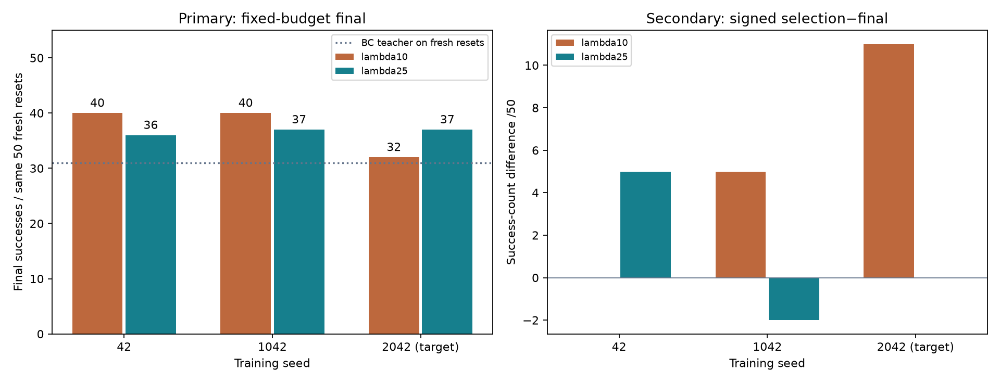
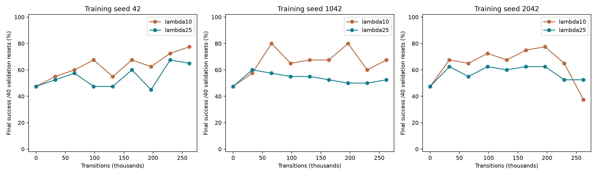
Validation resets 230000–230039 are deliberately reused. Tests 250000–250049 are fresh relative to PR18. Validation selection ranks final success, any-step success, then return, with step zero eligible. Selection precedes the boundary optimizer update; final weights include the last update.
Paired final successes
New/lost episodes compare the same reset seeds. Teacher gains/losses use the fresh-test teacher.
All paired outcomes, including selected-to-final losses
Passive holding diagnostics
After-first-success means steps strictly after the command that first produced success, including later failed states. Immediately-successful pre-state commands form a separate subset. Policies visit different states, so these are not matched-state causal effects. Missing subsets remain missing. Commands, signed gripper-command changes, measured finger motion and grasp flags are separate quantities. Same-step loss associations do not prove contact causality.
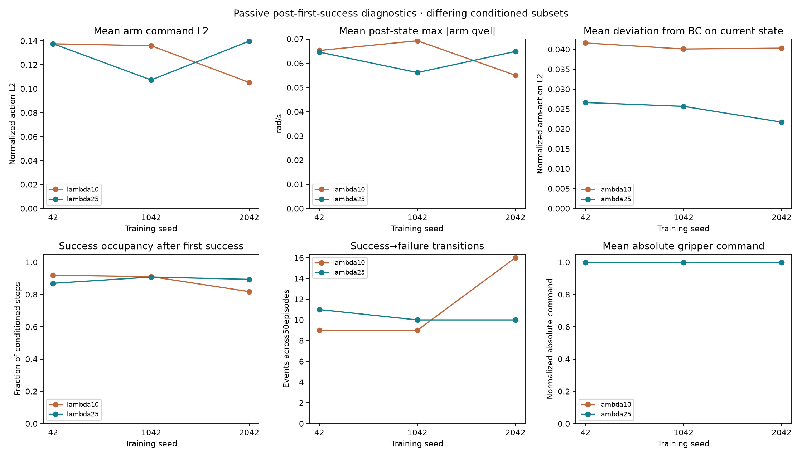
All conditioned summaries and loss associations · Independent final geometry and failures
Gradient probes versus actual updates
Both strengths use the unchanged PR18 objective and bounded critic. Top panels measure teacher/PPO actor gradient ratios on the first pre-update minibatch; bottom panels measure actual actor parameter deltas at the first executed Adam step. These are different measurements, not whole-update norms. Optimizer-step gaps remain gaps.
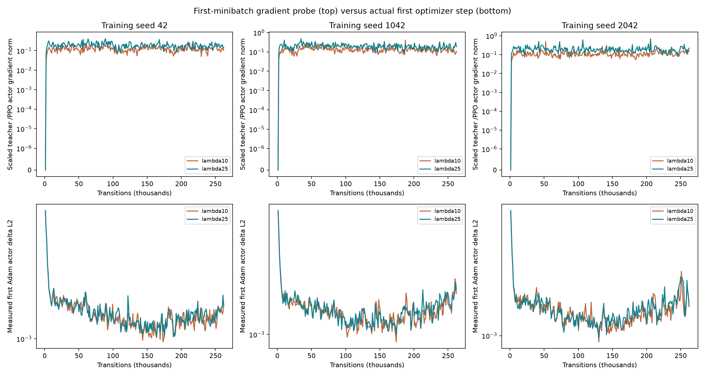
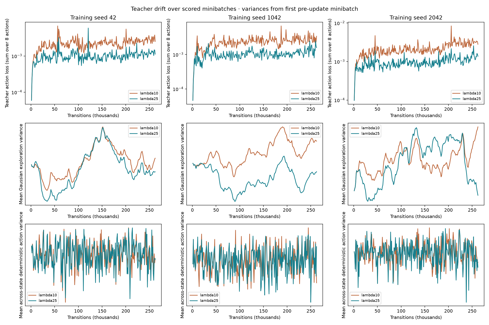
Teacher loss averages all scored training minibatches; both variance measurements use the first pre-update minibatch. Gaussian exploration variance measures stochastic sampling. Deterministic-mean variance across different states is not temporal jitter.
Every successful-then-displaced final case
All episodes that achieved success and finish with actual 3D cube–goal distance>2.5cm, sorted by reset seed. No favorable-case selection. A static final arm can still hold the cube outside tolerance. Vertical dashed lines mark first success; horizontal dotted lines mark placement tolerance. Full states/actions are exported separately. Expand each condition to inspect all its cases.
seed42_lambda10_final: 8 qualifying cases
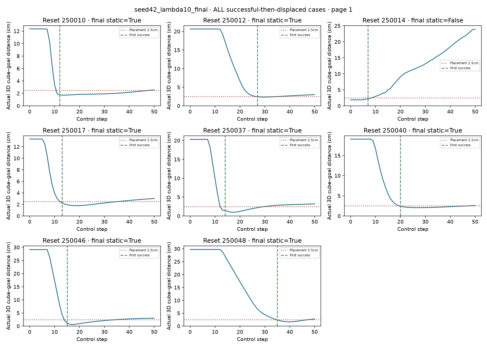
seed42_lambda25_final: 10 qualifying cases
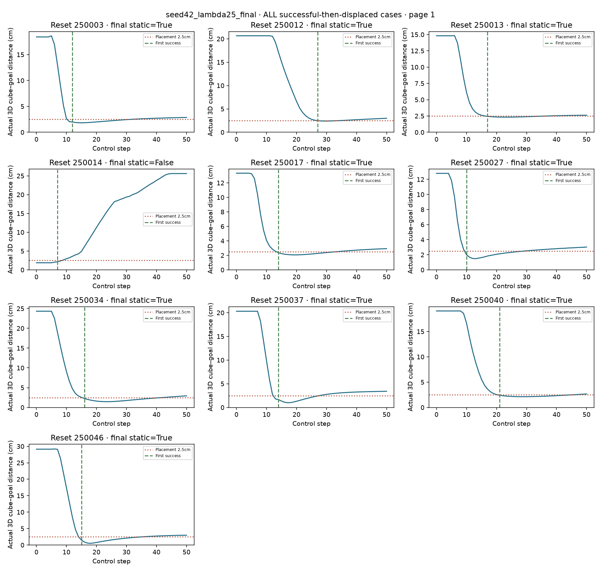
seed1042_lambda10_final: 8 qualifying cases
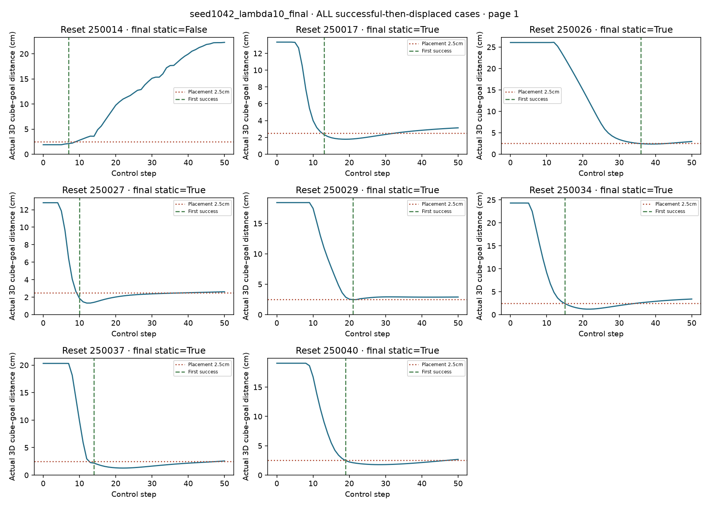
seed1042_lambda25_final: 9 qualifying cases
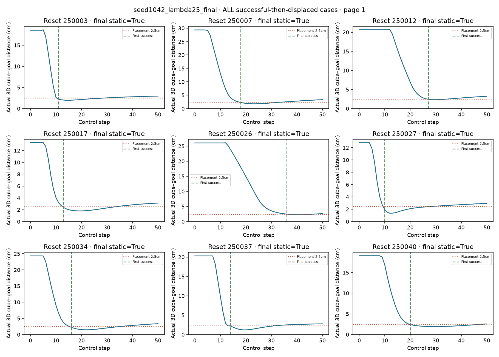
seed2042_lambda10_final: 15 qualifying cases
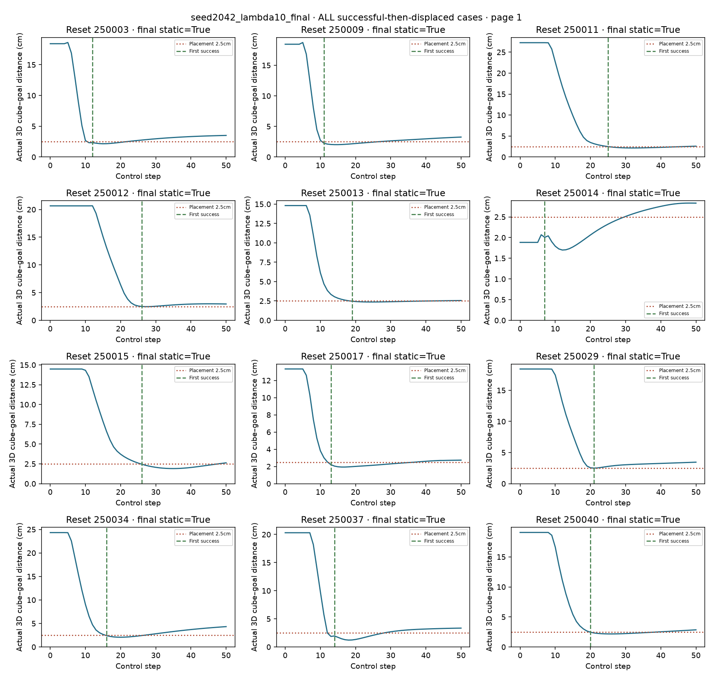
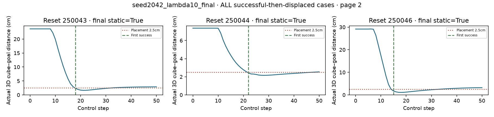
seed2042_lambda25_final: 9 qualifying cases
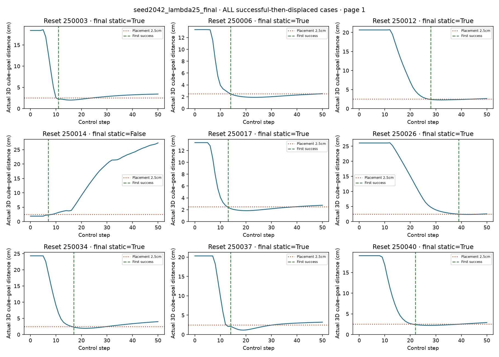
Complete case-selection manifest
Native first-two-reset rollouts
All 14 native files use reset 250000 or 250001, regardless of outcome. Episode fields and every holding record match full held-out evaluation.
Training seed 42 · reset250000
BC teacherλ10 finalλ25 finalTraining seed 42 · reset250001
BC teacherλ10 finalλ25 finalTraining seed 1042 · reset250000
BC teacherλ10 finalλ25 finalTraining seed 1042 · reset250001
BC teacherλ10 finalλ25 finalTraining seed 2042 · reset250000
BC teacherλ10 finalλ25 finalTraining seed 2042 · reset250001
BC teacherλ10 finalλ25 finalControls and evidence
All three λ10 final policy tensors exactly reproduce PR18: True. This is a read-only weight comparison, not another test evaluation. Reference reproduction audit.
All 18 actual initial/final/selected checkpoints and six final budgets are verified before held-out evaluation. Each pair matches canonical initial tensors, teacher tensors, parent RNG manifests and actual first-rollout summaries. The original BC teacher stays frozen outside policy Adam. Historical PR18 selected checkpoints are retained by hash only as reference metadata and are not evaluated, used for initialization or used as supervision in this comparison.
Protocol · Frozen protocol hash · Criterion arithmetic · Actual checkpoint verification · Thirteen evaluation summaries · Episode/compressed trace hashes · Video hashes · Historical reference manifest